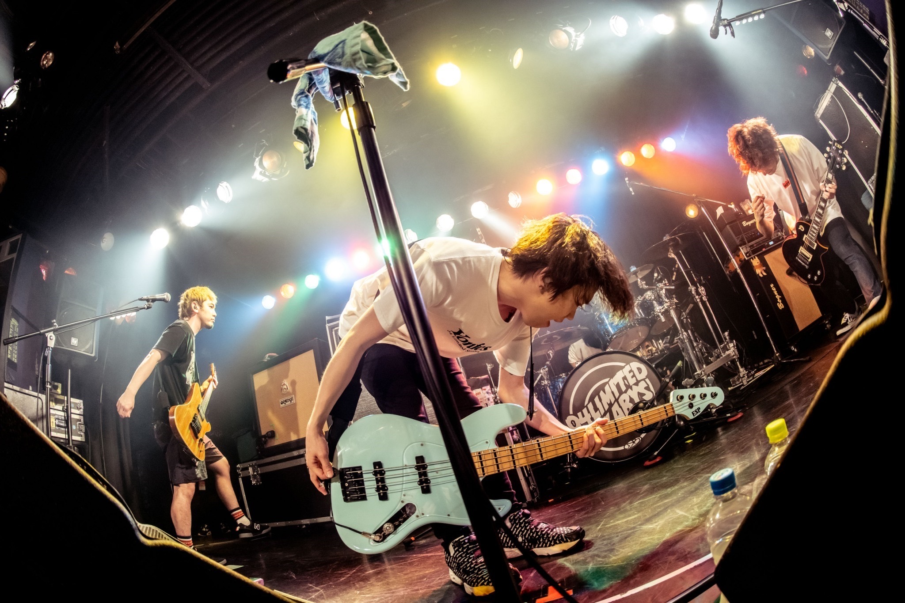

自身がバンドが好きなのと、その魅力をいろんな人に知ってもらいたいと思ったから。
私は04 Limited sazabys、ELLEGARDEN、UNISON SQUARE GARDENが特に好きなバンドであるが、ここでは04 Limited Sazabysに着目する。
04 Limited Sazabysの最大の魅力は何と言ってもハイスピードで駆け抜けていくポップサウンドとそのハイトーンボイスである。
個人的にコピーバンドをしようと思ってもそう簡単にはできないハイレベルな演奏も含めて耳が楽しい。フェスやワンマンライブではそれが直接感じられる。
ドーパミン中毒のガキにはたまらない。

| 曲名 | 公開日 | 再生回数 | 高評価 |
|---|---|---|---|
| swim | 2014/8/21 | 1475万回 | 9.2万回 |
| monolith | 2014/1/17 | 686万回 | 3.4万回 |